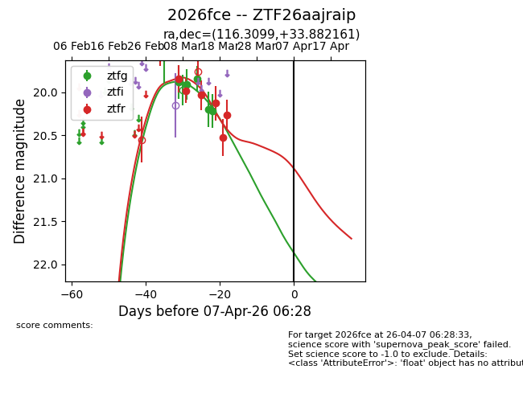
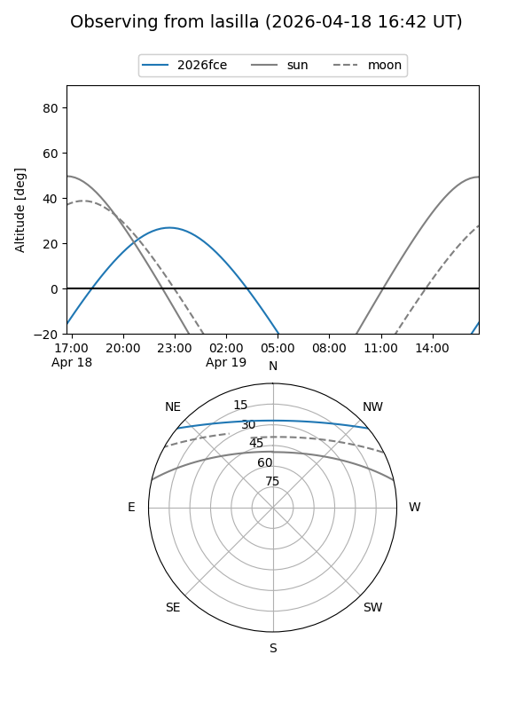
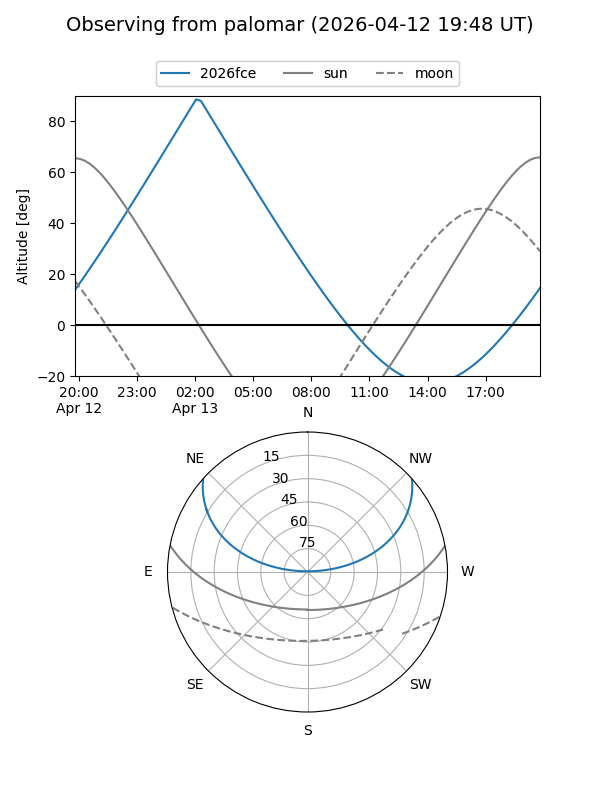
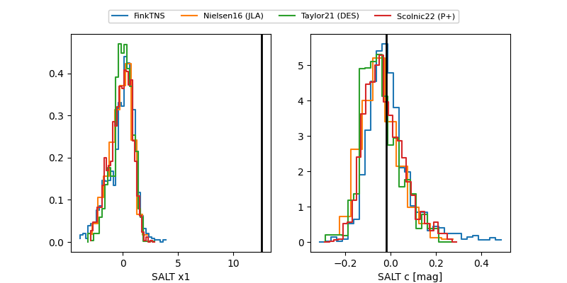

2026fce
Target 2026fce at 2026-04-07 06:32
Aliases and brokers:
FINK: link
Lasair: link
ALeRCE: link
TNS: link
YSE: link
alt names
ZTF26aajraip (ztf,fink_ztf)
2026fce (tns,yse)
Coordinates:
equatorial (ra, dec) = 116.3099,+33.88216
equatorial (HMS+DMS) = 07:45:14.38,+33:52:55.78
galactic (l, b) = (186.1178,+25.21815)
Flags:
Photometry:
last ztfg=20.22, ztfr=20.27
5 ztfg, 6 ztfr detections
Lightcurve

Visibility


Additional plots
